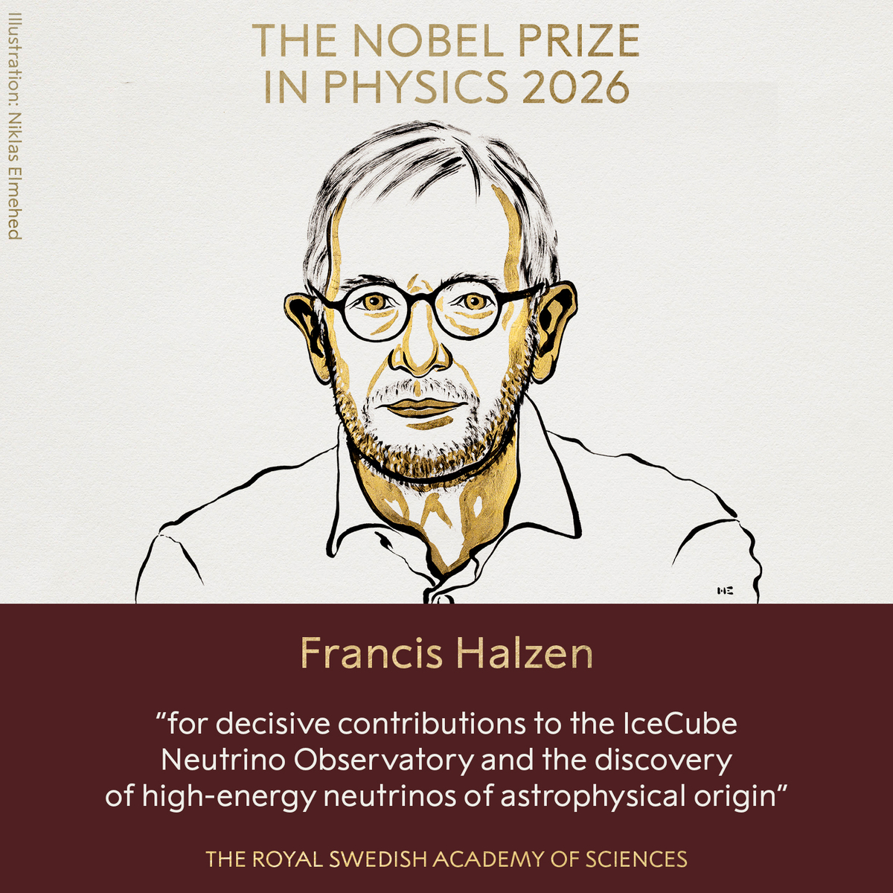
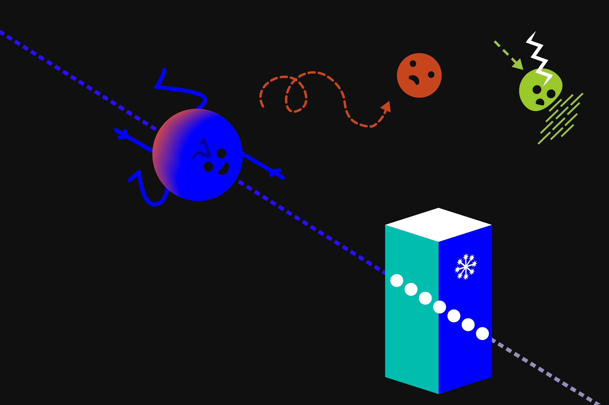
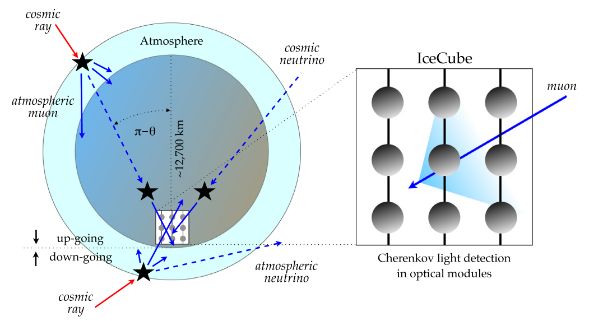
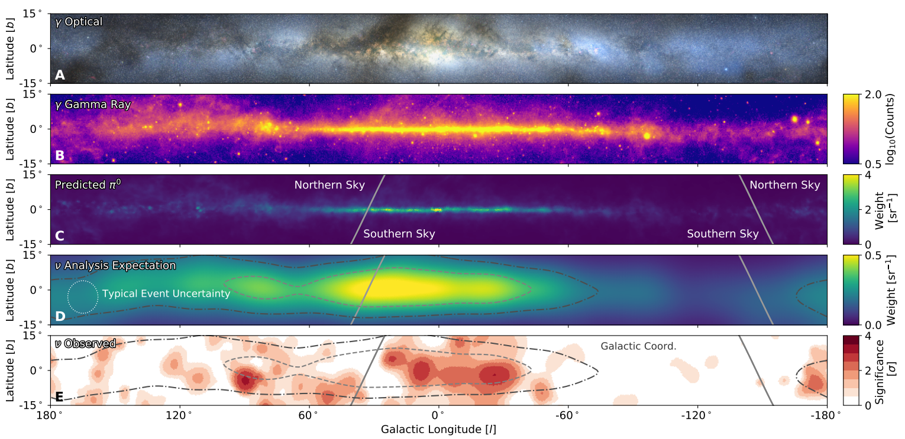
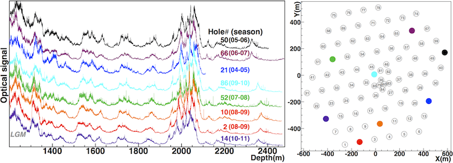
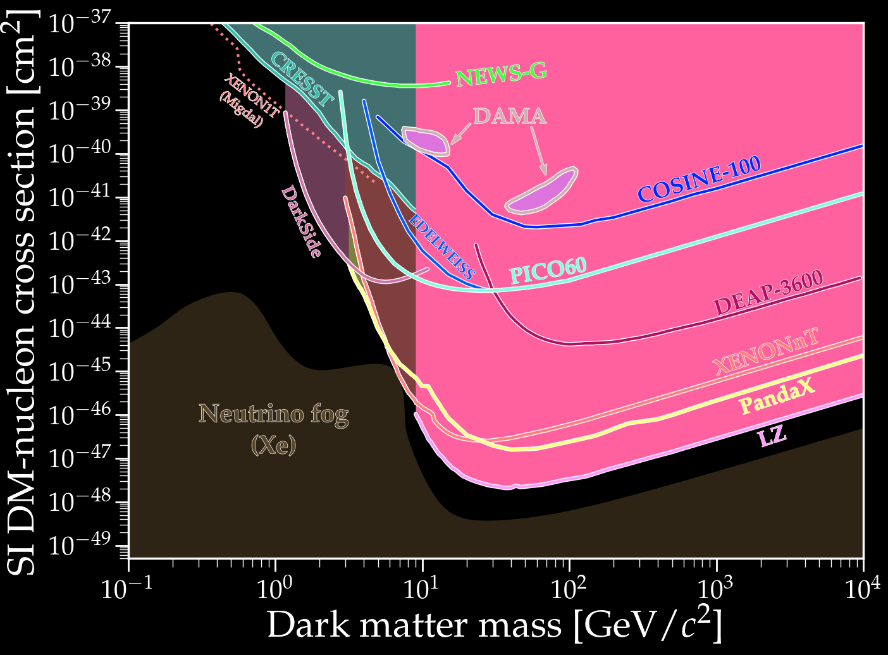
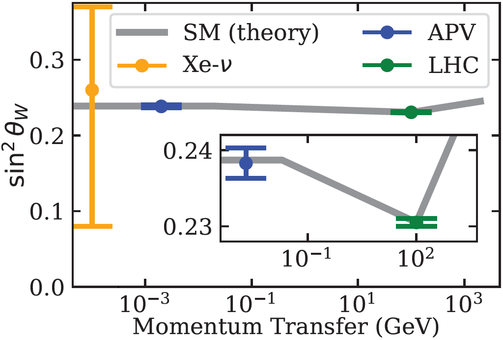

Ben Roberts (UQ) — 2026 —
broberts.io/slides
# Hunting Ghosts in the Ice ## _Francis Halzen, the IceCube neutrino observatory and the 2026 Nobel Prize in Physics_ <br> <br> <br> <div style="display: flex; justify-content: center; align-items: center; gap: 60px"> <div style="width: 32%; text-align: center"> <img src="img/Halzen.jpg" style="width: 100%; margin: 0 auto 1px auto"><br> <font size="3" class="credit">[<a href="https://news.wisc.edu/university-of-wisconsin-madison-professor-francis-halzen-named-2026-nobel-laureate-in-physics/">news.wisc.edu</a>]</font> <h4 style="margin: 6px 0 0 0">Francis Halzen</h4> </div> <!-- Neutrino Nobels: 1988 (ν_μ), 1995 (Reines), 2002 (Davis, Koshiba), 2015 (Kajita, McDonald), 2026 → 5th; 6th if 1957 parity (Lee, Yang) counts, as the history slide's medals do. Solo: Charpak 1992 was the last unshared physics prize before 2026 (34 years) --> <div style="text-align: center"> <img src="img/nobel-medal.png" style="height: 240px; margin: 0; background: none; border: none"> <h4 style="margin: 14px 0 0 0">5th Nobel for neutrinos</h4> <h4 style="margin: 6px 0 0 0">First solo physics prize since 1992</h4> </div> <div style="width: 22%; text-align: center; position: relative; top: 47px"> <!-- top: shifts Bert & Ernie down; tune to align names --> <img src="img/Bert_and_Ernie.jpeg" style="width: 100%; margin: 0 auto 1px auto"><br> <font size="3" class="credit">[Sesame Street]</font> <h4 style="margin: 6px 0 0 0">Bert and Ernie</h4> </div> </div> <br> <br> <!-- <br> --> #### Benjamin M. Roberts _School of Mathematics and Physics, University of Queensland, Australia_ <br> <div style="font-size: 0.8em">Physics Colloquium — 6 November 2026</div> <br> <div class="credit" style="font-size: 0.4em">Image: [IceCube / Martin Wolf, 2017]</div>
# A theorist and an ice cube <div style="display: flex; justify-content: space-between; gap: 70px; text-align: left"> <div style="width: 46%"> <div style="text-align: center"> <h3 style="margin: 10px 0 12px 0; font-size: 1.8em"><b>Francis Halzen</b></h3> <p></p> <div style="font-size: 16px; line-height: 1.2"><font size="3" class="credit">[Ill. Niklas Elmehed © Nobel Prize Outreach]</font></div> </div> <div style="font-size: 1.5em; margin-top: 24px"> <h4 style="margin: 0 0 14px 0"> • A particle theorist</h4> <h4 style="margin: 0"> • Bet on the ice, then led IceCube</h4> </div> </div> <div class="fragment" style="width: 46%"> <div style="text-align: center"> <h3 style="margin: 10px 0 12px 0; font-size: 1.8em"><b>IceCube</b></h3> <img src="img/IceCubeDetector.jpg" style="height: 481px; margin: 0 auto 1px auto"> <div style="font-size: 16px; line-height: 1.2"><font size="3" class="credit">[IceCube/NSF]</font></div> </div> <div style="font-size: 1.5em; margin-top: 24px"> <h4 style="margin: 0 0 14px 0"> • A km$^3$ of Antarctic ice</h4> <h4 style="margin: 0 0 14px 0"> • 5,160 sensors catch the light</h4> <h4 style="margin: 0"> • Where do cosmic rays come from?</h4> </div> </div> </div>
# What is a neutrino? <div style="text-align: center; float: right; width: 46%"> <br> <img src="../DarkMatter/img/Standard_Model_of_Elementary_Particles_dark.svg" width="95%" style="margin: 15px auto 1px auto"> <div style="font-size: 16px; line-height: 1.2"><font size="3" class="credit">[Cush / Wikimedia Commons]</font></div> </div> <div style="text-align: left; float: left; width: 52%; font-size: 1.5em"> <br> <div style="margin-bottom: 30px"> <h3 style="margin: 0 0 6px 0"><span style="color: cyan">Matter</span> <b>One of the 12 particles</b></h3> <h4 style="margin: 0"> • The bottom row: $\nu_e$, $\nu_\mu$, $\nu_\tau$</h4> </div> <div class="fragment" style="margin-bottom: 30px"> <h3 style="margin: 0 0 6px 0"><span style="color: cyan">Weak</span> <b>Feels only the weak force</b></h3> <h4 style="margin: 0"> • No charge, no colour, almost no mass</h4> </div> <div class="fragment"> <h3 style="margin: 0 0 6px 0"><span style="color: cyan">Ghost</span> <b>Light-years of lead</b></h3> <h4 style="margin: 0"> • You only ever see what it makes</h4> </div> </div>
# History of neutrinos ### _(our point of view)_ <div style="text-align: center; float: right; width: 42%; position: relative; top: -40px"> <!-- top: raises the image column; more negative = higher --> <br> <br> <div class="r-stack"> <!-- Beta spectrum of RaE (210Bi), decay diagram overlaid top right (index 1); the Fermi block appears BELOW it (index 3); both until the telegram (index 4) --> <!-- Overlay position/size: top / right / width on the decay-diagram img --> <div class="fragment fade-out" data-fragment-index="4" style="width: 100%"> <div class="fragment fade-in" data-fragment-index="1"> <div style="position: relative; width: 85%; margin: 15px auto 1px auto"> <img src="img/Beta_spectrum_of_RaE_inverted.png" style="width: 90%; margin: 0px"> <img src="img/Beta-minus_Decay_wiki.png" style="position: absolute; top: 3%; right: 3%; width: 47%; margin: 0"> </div> <div style="font-size: 16px; line-height: 1.2"><font size="3" class="credit"> [F Klemm + Inductiveload/ Wikimedia Commons] </font></div> </div> <div class="fragment fade-in" data-fragment-index="3"> <div style="display: flex; justify-content: center; gap: 40px"> <div> <br> <img src="img/Enrico_Fermi_1943-49_DeptEnergy.jpg" style="height: 300px; margin: 0px auto 0px auto"> <div style="font-size: 16px; line-height: 1.2"><font size="3" class="credit">[US Dept. of Energy]</font></div> </div> <!-- right column spans the Fermi photo: equation at its top, image at its bottom --> <div style="height: 320px; margin-top: 15px; display: flex; flex-direction: column; justify-content: space-between; align-items: center"> <br> <div>\[\mathcal{L}_{\rm F} = -G_F\,(\bar\psi_p\gamma^\mu\psi_n)(\bar\psi_e\gamma_\mu\psi_\nu)\]</div> <img src="img/fermi-vs-W.svg" style="height: 220px; margin: 0"> </div> </div> </div> </div> <!-- Cowan & Reines photo (index 4), telegram below one click later (index 5); both until parity (index 6) --> <div class="fragment fade-out" data-fragment-index="6" style="width: 100%"> <div class="fragment fade-in" data-fragment-index="4"> <img src="img/CowenReines.jpg" width="40%" style="margin: 0px auto 1px auto"> <div style="font-size: 16px; line-height: 1.2"><font size="3" class="credit">Cowen & Reines Scintillator [Los Alamos Nat. Lab.]</font></div> <div class="fragment fade-in" data-fragment-index="5"> <img src="img/telegram.jpg" width="85%" style="margin: 15px auto 1px auto"> <div style="font-size: 16px; line-height: 1.2"><font size="3" class="credit">[Reines & Cowan to Pauli, June 1956: CERN Pauli Archive]</font></div> </div> </div> </div> <!-- Parity violation, 1957 (index 5) until 1962 (index 6): Lee & Yang + Wu side by side above, NIST experiment concept below --> <div class="fragment fade-out" data-fragment-index="7" style="width: 100%"> <div class="fragment fade-in" data-fragment-index="6"> <div style="display: flex; justify-content: center; gap: 20px"> <div style="width: 30%"> <img src="img/LeeYang.jpeg" style="width: 100%; margin: 0px auto 1px auto"> <div style="font-size: 13px; line-height: 1.2"><font size="2" class="credit">[U. Chicago]</font></div> </div> <div style="width: 30%"> <img src="img/Chien-shiung_Wu.jpg" style="width: 100%; margin: 0px auto 1px auto"> <div style="font-size: 13px; line-height: 1.2"><font size="2" class="credit">[Columbia]</font></div> </div> </div><br> <img src="img/NISTWuExperimentConcept.jpg" width="35%" style="margin: 15px auto 1px auto"> <div style="font-size: 13px; line-height: 1.2"><font size="2" class="credit">[Smithsonian]</font></div> </div> </div> <!-- More flavours, 1962 (index 6) until Sun/SN1987A (index 7): Schwartz + spark chamber above, AGS below --> <div class="fragment fade-out" data-fragment-index="8" style="width: 100%"> <div class="fragment fade-in" data-fragment-index="7"> <div style="width: 40%; margin: 0 auto"> <img src="img/MelvinSchwartz.webp" style="width: 100%; margin: 0px auto 1px auto"> <div style="font-size: 16px; line-height: 1.15"><font size="3">Melvin Schwartz with the 10-ton spark chamber, showing a multiple exposure of cosmic-ray muon tracks.</font> <font size="1" class="credit">[Brookhaven Nat. Lab.]</font></div> </div> <img src="img/AGS.png" width="100%" style="margin: 15px auto 1px auto"> </div> </div> <!-- Homestake, 1968 (index 8) until SN1987A (index 9): two images stacked --> <div class="fragment fade-out" data-fragment-index="9" style="width: 100%"> <div class="fragment fade-in" data-fragment-index="8"> <img src="img/Homestake1.jpg" width="60%" style="margin: 15px auto 1px auto"> <div style="font-size: 16px; line-height: 1.2"><font size="3" class="credit">[Brookhaven Nat. Lab.]</font></div> <img src="img/Homestake2.jpg" width="60%" style="margin: 15px auto 1px auto"> <div style="font-size: 16px; line-height: 1.2"><font size="3" class="credit">[US Dept. Energy]</font></div> </div> </div> <!-- SN1987A: Hubble image above, Kamiokande-II + PRL plot below; 1987 (index 9) until Super-K (index 10) --> <div class="fragment fade-out" data-fragment-index="10" style="width: 100%"> <div class="fragment fade-in" data-fragment-index="9"> <img src="img/SN_1987A_Hubble.jpg" width="60%" style="margin: 15px auto 1px auto"> <div style="font-size: 16px; line-height: 1.2"><font size="3" class="credit">[Hubble]</font></div> <div style="display: flex; justify-content: center; align-items: center; gap: 20px"> <!-- <img src="img/KamiokandeII.png" width="35%" style="margin: 15px 0 1px 0"> --> <img src="img/PhysRevLett.58.1490.png" width="60%" style="margin: 15px 0 1px 0; background: white"> </div><br> <div style="font-size: 16px; line-height: 1.2"><font size="3" class="credit">[Hirata <i>et al.</i>, <a href="https://journals.aps.org/prl/pdf/10.1103/PhysRevLett.58.1490">Phys. Rev. Lett. <b>58</b>, 1490 (1987)</a>]</font></div> </div> </div> <!-- Super-Kamiokande: 1998 (index 10) until IceCube (index 11) --> <div class="fragment fade-out" data-fragment-index="11" style="width: 100%"> <div class="fragment fade-in" data-fragment-index="10"> <img src="img/SuperKamiokande-1.webp" width="80%" style="margin: 15px auto 1px auto"> <div style="font-size: 16px; line-height: 1.2"><font size="3" class="credit">[Super-Kamiokande]</font></div> </div> </div> <!-- IceCube Lab under the aurora: from 2013 (index 11) to the end (ice-cube.jpeg removed 31 Oct) --> <div class="fragment fade-in" data-fragment-index="11" style="width: 100%"> <img src="img/ICL-auroras.jpg" width="100%" style="margin: 15px auto 1px auto"> <div style="font-size: 16px; line-height: 1.2"><font size="3" class="credit">[Ilya Bodo / IceCube/NSF]</font></div><br> <!-- <img src="img/IceCubeDetector.jpg" width="50%" style="margin: 15px auto 1px auto"> <div style="font-size: 16px; line-height: 1.2"><font size="3" class="credit">[icecube.wisc.edu]</font></div> --> </div> </div> </div> <div style="text-align: left; float: left; width: 56%; font-size: 1.125em"> <div class="fragment" data-fragment-index="1" style="margin-bottom: 26px"> <h3 style="margin: 0 0 6px 0; font-size: 1.33em"><span style="color: cyan">1930</span> <b>Theorised</b> <i style="font-size: 0.7em">"Dear Radioactive Ladies and Gentlemen, ..."</i></h3> <div class="fragment fade-out fold-away" data-fragment-index="3"> <h4 style="margin: 0 0 0px 0"> • Pauli's "desperate remedy": undetectable neutral particle, explain energy conservation in Bi $\beta$ decay</h4> <h4 class="fragment" data-fragment-index="2" style="margin: 0 0 10px 0"><i style="font-size: 0.9em"> "Unfortunately, I cannot appear in Tubingen personally since I am indispensable here in Zurich because of a ball"</i></h4> </div> </div> <div class="fragment" data-fragment-index="3" style="margin-bottom: 26px"> <h3 style="margin: 0 0 6px 0; font-size: 1.33em"><span style="color: cyan">1933</span> <b>Fermi theory</b></h3> <div class="fragment fade-out fold-away" data-fragment-index="4"> <h4 style="margin: 0 0 0px 0"> • Fermi's theory of $\beta$ decay [<a href="https://doi.org/10.1007/BF01351864">Z. Phys. <b>88</b>, 161 (1934)</a>] <i style="font-size: 0.8em">(rejected by Nature)</i></h4> <h4 style="margin: 0 0 10px 0"> • Bethe and Peierls: $\sigma \sim 10^{-44}$ cm$^2$, "no practically possible way of observing" [<a href="https://www.nature.com/articles/133532a0">Nature <b>133</b>, 532 (1934)</a>]</h4> </div> </div> <div class="fragment" data-fragment-index="4" style="margin-bottom: 26px"> <h3 style="margin: 0 0 6px 0; font-size: 1.33em"><span style="color: cyan">1956</span> <b>Detected</b> <img src="img/nobel-medal.png" style="display: inline; height: 1.4em; margin: 0 0.2em 0 0; vertical-align: middle; background: none; border: none"><span style="color: #ccc">1995</span></h3> <div class="fragment fade-out fold-away" data-fragment-index="6"> <h4 style="margin: 0 0 10px 0"> • Reines and Cowan [<a href="https://www.science.org/doi/10.1126/science.124.3212.103">Science (1956)</a>]: reactor $\bar\nu_e$ at Savannah River: $\bar\nu_e + p \to e^+ + n$</h4> </div> </div> <div class="fragment" data-fragment-index="6" style="margin-bottom: 26px"> <h3 style="margin: 0 0 6px 0; font-size: 1.33em"><span style="color: cyan">1957</span> <b>Parity violation</b> <img src="img/nobel-medal.png" style="display: inline; height: 1.4em; margin: 0 0.2em 0 0; vertical-align: middle; background: none; border: none"><span style="color: #ccc">1957</span></h3> <div class="fragment fade-out fold-away" data-fragment-index="7"> <h4 style="margin: 0 0 0px 0"> • Lee and Yang [<a href="https://journals.aps.org/pr/abstract/10.1103/PhysRev.104.254">Phys. Rev. <b>104</b>, 254 (1956)</a>], C. S. Wu: $^{60}$Co $\beta$ decay [<a href="https://journals.aps.org/pr/abstract/10.1103/PhysRev.105.1413">Phys. Rev. <b>105</b>, 1413 (1957)</a>]</h4> </div> </div> <div class="fragment" data-fragment-index="7" style="margin-bottom: 26px"> <h3 style="margin: 0 0 6px 0; font-size: 1.33em"><span style="color: cyan">1962</span> <b>Now in more flavours</b> <img src="img/nobel-medal.png" style="display: inline; height: 1.4em; margin: 0 0.2em 0 0; vertical-align: middle; background: none; border: none"><span style="color: #ccc">1988</span></h3> <div class="fragment fade-out fold-away" data-fragment-index="8"> <h4 style="margin: 0 0 10px 0"> • $\nu_\mu \neq \nu_e$ at Brookhaven [<a href="https://journals.aps.org/prl/abstract/10.1103/PhysRevLett.9.36">Phys. Rev. Lett. <b>9</b>, 36 (1962)</a>]; doublet structure of leptons</h4> <!-- $\nu_\tau$ at Fermilab (DONUT) in 2000 --> </div> </div> <div class="fragment" data-fragment-index="8" style="margin-bottom: 26px"> <h3 style="margin: 0 0 6px 0; font-size: 1.33em"><span style="color: cyan">1968, 1987</span> <b>The Sun and a supernova</b> <img src="img/nobel-medal.png" style="display: inline; height: 1.4em; margin: 0 0.2em 0 0; vertical-align: middle; background: none; border: none"><span style="color: #ccc">2002</span></h3> <div class="fragment fade-out fold-away" data-fragment-index="10"> <h4 style="margin: 0 0 0px 0"> • Davis's Homestake tank ($\nu_e + {}^{37}{\rm Cl} \to {}^{37}{\rm Ar} + e^-$): finds $\tfrac13$ of the predicted $\nu_e$ $\implies$ solar neutrino problem</h4> <h4 class="fragment" data-fragment-index="9" style="margin: 0 0 10px 0"> • SN1987A: $\sim$25 events in 13 s (Kamiokande-II, IMB, Baksan): neutrino astronomy works</h4> </div> </div> <div class="fragment" data-fragment-index="10" style="margin-bottom: 26px"> <h3 style="margin: 0 0 6px 0; font-size: 1.33em"><span style="color: cyan">1998–2002</span> <b>Oscillating, so massive</b> <img src="img/nobel-medal.png" style="display: inline; height: 1.4em; margin: 0 0.2em 0 0; vertical-align: middle; background: none; border: none"><span style="color: #ccc">2015</span></h3> <div class="fragment fade-out fold-away" data-fragment-index="11"> <h4 style="margin: 0 0 10px 0"> • Super-K (atmospheric) and SNO (solar): flavours change in flight</h4> </div> </div> <div class="fragment" data-fragment-index="11" style="margin-bottom: 26px"> <h3 style="margin: 0 0 6px 0; font-size: 1.33em"><span style="color: cyan">2013</span> <b>From the cosmos</b> <img src="img/nobel-medal.png" style="display: inline; height: 1.4em; margin: 0 0.2em 0 0; vertical-align: middle; background: none; border: none"><span style="color: #ccc">2026</span></h3> <h4 style="margin: 0 0 10px 0"> • IceCube: TeV–PeV neutrinos from beyond the Galaxy</h4> </div> </div>
# History of neutrinos ### _(their point of view)_ <div style="text-align: left; float: left; width: 56%; font-size: 1.125em"> <div class="fragment" data-fragment-index="1" style="margin-bottom: 26px"> <h3 style="margin: 0 0 6px 0; font-size: 1.33em"><span style="color: cyan">$t < 1$ s</span> <b>In equilibrium</b></h3> <div class="fragment fade-out fold-away" data-fragment-index="2"> <h4 style="margin: 0 0 10px 0"> • $T > 1$ MeV: weak reactions ($\nu\bar\nu \leftrightarrow e^+e^-$, $\nu e \leftrightarrow \nu e$) keep neutrinos thermal with everything else</h4> </div> </div> <div class="fragment" data-fragment-index="2" style="margin-bottom: 26px"> <h3 style="margin: 0 0 6px 0; font-size: 1.33em"><span style="color: cyan">$t \approx 1$ s</span> <b>Freeze-out</b></h3> <div class="fragment fade-out fold-away" data-fragment-index="3"> <h4 style="margin: 0 0 10px 0"> • $\Gamma \sim G_F^2 T^5$ falls below $H \sim T^2/M_{\rm Pl}$: neutrinos decouple and free-stream ever after</h4> </div> </div> <div class="fragment" data-fragment-index="3" style="margin-bottom: 26px"> <h3 style="margin: 0 0 6px 0; font-size: 1.33em"><span style="color: cyan">$t \approx$ few s</span> <b>Left out in the cold</b></h3> <div class="fragment fade-out fold-away" data-fragment-index="4"> <h4 style="margin: 0 0 10px 0"> • $e^+e^-$ annihilation reheats the photons, not the neutrinos: $T_\nu = (4/11)^{1/3}\, T_\gamma$</h4> </div> </div> <div class="fragment" data-fragment-index="4" style="margin-bottom: 26px"> <h3 style="margin: 0 0 6px 0; font-size: 1.33em"><span style="color: cyan">$t \approx 3$ min</span> <b>Set the helium</b></h3> <div class="fragment fade-out fold-away" data-fragment-index="5"> <h4 style="margin: 0 0 10px 0"> • The same weak reactions freeze $n/p \approx 1/7$ $\Rightarrow$ 25% $^4$He by mass (BBN)</h4> </div> </div> <div class="fragment" data-fragment-index="5" style="margin-bottom: 26px"> <h3 style="margin: 0 0 6px 0; font-size: 1.33em"><span style="color: cyan">$\gtrsim 10^8$ yr</span> <b>Stars</b></h3> <div class="fragment fade-out fold-away" data-fragment-index="6"> <h4 style="margin: 0 0 10px 0"> • Two $\nu_e$ per $^4$He made; the Sun emits $2\times10^{38}$ $\nu$/s: 65 billion cross your thumbnail each second</h4> </div> </div> <div class="fragment" data-fragment-index="6" style="margin-bottom: 26px"> <h3 style="margin: 0 0 6px 0; font-size: 1.33em"><span style="color: cyan">Core collapse</span> <b>Supernovae</b></h3> <div class="fragment fade-out fold-away" data-fragment-index="7"> <h4 style="margin: 0 0 10px 0"> • 99% of $3\times10^{53}$ erg leaves as $10^{58}$ neutrinos in $\sim$10 s, and they help drive the explosion</h4> </div> </div> <div class="fragment" data-fragment-index="7" style="margin-bottom: 26px"> <h3 style="margin: 0 0 6px 0; font-size: 1.33em"><span style="color: cyan">Today</span> <b>Cosmic neutrino background</b></h3> <div class="fragment fade-out fold-away" data-fragment-index="8"> <h4 style="margin: 0 0 10px 0"> • $T_\nu \approx 1.95$ K, $\sim$340 cm$^{-3}$; never directly detected, but felt via $N_{\rm eff} \approx 3.04$ (CMB) and structure growth ($\sum m_\nu \lesssim 0.1$ eV)</h4> </div> </div> <div class="fragment" data-fragment-index="8" style="margin-bottom: 26px"> <h3 style="margin: 0 0 6px 0; font-size: 1.33em"><span style="color: cyan">Also</span> <b>Everything else</b></h3> <div class="fragment fade-out fold-away" data-fragment-index="9"> <h4 style="margin: 0 0 10px 0"> • Earth's radioactivity, reactors, cosmic-ray showers, cosmic accelerators (TeV–PeV), and the still-unseen EeV cosmogenic (GZK) flux</h4> </div> </div> <h4 class="fragment" data-fragment-index="9" style="margin: 12px 0 0 0"> <b>The most abundant matter particle, and the oldest relic: nothing has touched one since the first second</b></h4> </div> <div style="text-align: center; float: right; width: 42%"> <div style="border: 2px dashed #888; border-radius: 10px; height: 330px; width: 90%; margin: 0 auto 28px auto; display: flex; align-items: center; justify-content: center; color: #aaa; font-size: 0.65em; padding: 0 24px; box-sizing: border-box"> <div>Image 1 — Cosmic-history timeline, with "neutrinos decouple, $t = 1$ s" marked beside "CMB, $t = 380{,}000$ yr"<br>[ESA/Planck or NASA/WMAP "History of the Universe"]</div> </div> <div style="border: 2px dashed #888; border-radius: 10px; height: 330px; width: 90%; margin: 0 auto; display: flex; align-items: center; justify-content: center; color: #aaa; font-size: 0.65em; padding: 0 24px; box-sizing: border-box"> <div>Image 2 — The Sun, imaged in neutrinos (500 days of Super-Kamiokande data)<br>[APOD 5 June 1998, R. Svoboda and K. Gordan (LSU)]</div> </div> </div>
# The mass puzzle (Nobel 2015) <div style="text-align: center; float: right; width: 42%"> <br> <img src="img/SuperK_1998_zenith_mu.png" style="height: 360px; margin: 15px auto 1px auto"> <div style="font-size: 16px; line-height: 1.2"><font size="3" class="credit">[Fukuda <i>et al.</i>, <a href="https://journals.aps.org/prl/abstract/10.1103/PhysRevLett.81.1562">Phys. Rev. Lett. <b>81</b>, 1562 (1998)</a>]</font></div> <img src="img/SNO_2002_flux.png" style="height: 360px; margin: 25px auto 1px auto"> <div style="font-size: 16px; line-height: 1.2"><font size="3" class="credit">[Ahmad <i>et al.</i>, <a href="https://journals.aps.org/prl/abstract/10.1103/PhysRevLett.89.011301">Phys. Rev. Lett. <b>89</b>, 011301 (2002)</a>]</font></div> </div> <div style="text-align: left; float: left; width: 56%; font-size: 1.5em"> <br> <div style="margin-bottom: 30px"> <h3 style="margin: 0 0 6px 0"><span style="color: cyan">1998–2002</span> <b>Flavours change in flight</b></h3> <div style="font-size: 0.85em">$$P(\nu_\mu\to\nu_\mu) \simeq 1 - \sin^2 2\theta\,\sin^2\!\left(\frac{\Delta m^2 L}{4E}\right)$$</div> <h4 style="margin: 0"> • Super-K (atmosphere), SNO (Sun)</h4> </div> <div class="fragment" style="margin-bottom: 30px"> <h3 style="margin: 0 0 6px 0"><span style="color: cyan">Mass</span> <b>The Standard Model says zero</b></h3> <h4 style="margin: 0"> • $m_\nu < 0.45$ eV: the first crack</h4> <div class="credit" style="font-size: 0.45em; margin-left: 2.2em">[KATRIN, <a href="https://www.science.org/doi/10.1126/science.adq9592">Science <b>388</b>, 180 (2025)</a>]</div> </div> <div class="fragment"> <h3 style="margin: 0 0 6px 0"><span style="color: cyan">Open</span> <b>Ordering, Majorana, CP</b></h3> <h4 style="margin: 0"> • JUNO, DUNE, Hyper-K, LEGEND</h4> </div> </div>
<br><br><br><br><br><br><br><br> # Why a cubic kilometre
# The neutrino sky ### 24 orders of magnitude in energy <div style="text-align: center; width: 95%; margin: 0 auto"> <img src="img/GUNS_flux.png" width="48%" style="margin: 10px auto 1px auto"> <div style="font-size: 16px; line-height: 1.2"><font size="3" class="credit">[Vitagliano, Tamborra & Raffelt, <a href="https://journals.aps.org/rmp/abstract/10.1103/RevModPhys.92.045006">Rev. Mod. Phys. <b>92</b>, 045006 (2020)</a>]</font></div> </div> <div style="text-align: left; width: 70%; margin: 0 auto; font-size: 1.5em"> <h4 class="fragment" style="margin: 15px 0 0 0"> • meV to EeV: every source on one axis</h4> <h4 class="fragment" style="margin: 0"> • IceCube at the far right: rarest, but $\sigma \propto E$</h4> <h4 class="fragment" style="margin: 0"> • So detectors grow: 600 tonnes to a billion</h4> </div>
# Why ghosts make the best messengers <div style="text-align: center; float: right; width: 42%"> <br> <br> <p></p> <div style="font-size: 16px; line-height: 1.2; margin-bottom: 20px"><font size="3" class="credit">[© Johan Jarnestad / The Royal Swedish Academy of Sciences]</font></div> <div style="border: 2px dashed #888; border-radius: 10px; height: 300px; width: 90%; margin: 0 auto; display: flex; align-items: center; justify-content: center; color: #aaa; font-size: 0.65em; padding: 0 24px; box-sizing: border-box"> <div>Image 2 — Gamma-ray horizon vs energy: how far light travels before $\gamma\gamma \to e^+e^-$ on starlight (TeV) and the CMB (PeV); mark the Galactic centre and TXS 0506+056<br>[e.g. Ahlers & Halzen, Prog. Part. Nucl. Phys. <b>102</b>, 73 (2018)]</div> </div> </div> <div style="text-align: left; float: left; width: 56%; font-size: 1.5em"> <br> <div style="margin-bottom: 30px"> <h3 style="margin: 0 0 6px 0"><span style="color: cyan">Light</span> <b>Absorbed on the way</b></h3> <h4 style="margin: 0"> • $\gamma\gamma \to e^+e^-$ on starlight and the CMB</h4> </div> <div class="fragment" style="margin-bottom: 30px"> <h3 style="margin: 0 0 6px 0"><span style="color: cyan">Cosmic rays</span> <b>Bent by magnetic fields</b></h3> <h4 style="margin: 0"> • They forget where they came from</h4> </div> <div class="fragment"> <h3 style="margin: 0 0 6px 0"><span style="color: cyan">Neutrinos</span> <b>Straight, and only from protons</b></h3> <h4 style="margin: 0"> • $p+p,\ p+\gamma \to \pi^\pm \to \nu$</h4> </div> </div>
# The 100-year cosmic-ray question <div style="text-align: center; float: right; width: 42%"> <br> <br> <div style="border: 2px dashed #888; border-radius: 10px; height: 230px; width: 90%; margin: 0 auto 28px auto; display: flex; align-items: center; justify-content: center; color: #aaa; font-size: 0.65em; padding: 0 24px; box-sizing: border-box"> <div>Image 1 — Victor Hess in his balloon gondola, 1912<br>[public domain]</div> </div> <div style="border: 2px dashed #888; border-radius: 10px; height: 400px; width: 90%; margin: 0 auto; display: flex; align-items: center; justify-content: center; color: #aaa; font-size: 0.65em; padding: 0 24px; box-sizing: border-box"> <div>Image 2 — All-particle cosmic-ray spectrum, $10^9$–$10^{20}$ eV: knee ($\sim$1 m$^{-2}$ yr$^{-1}$), ankle ($\sim$1 km$^{-2}$ yr$^{-1}$), LHC energy marked<br>[e.g. S. Swordy's plot, or the PDG cosmic-ray review]</div> </div> </div> <div style="text-align: left; float: left; width: 56%; font-size: 1.5em"> <br> <div style="margin-bottom: 30px"> <h3 style="margin: 0 0 6px 0"><span style="color: cyan">1912</span> <b>Cosmic rays</b> <img src="img/nobel-medal.png" style="display: inline; height: 1.4em; margin: 0 0.2em 0 0; vertical-align: middle; background: none; border: none"><span style="color: #ccc">1936</span></h3> <h4 style="margin: 0"> • Up to $10^{20}$ eV; sources still unknown</h4> </div> <div class="fragment" style="margin-bottom: 30px"> <h3 style="margin: 0 0 6px 0"><span style="color: cyan">1999</span> <b>Waxman–Bahcall</b></h3> <h4 style="margin: 0"> • $E^2\Phi_\nu \sim 10^{-8}$ GeV cm$^{-2}$ s$^{-1}$ sr$^{-1}$</h4> <div class="credit" style="font-size: 0.45em; margin-left: 2.2em">[<a href="https://doi.org/10.1103/PhysRevD.59.023002">Phys. Rev. D <b>59</b>, 023002 (1999)</a>]</div> </div> <div class="fragment"> <h3 style="margin: 0 0 6px 0"><span style="color: cyan">So</span> <b>A cubic kilometre</b></h3> <h4 style="margin: 0"> • $\sim$10 a year above 100 TeV</h4> </div> </div>
<br><br><br><br><br><br><br><br> # Halzen's bet
# A theorist bets on ice <div style="text-align: center; float: right; width: 42%"> <br> <div style="border: 2px dashed #888; border-radius: 10px; height: 300px; width: 90%; margin: 0 auto 28px auto; display: flex; align-items: center; justify-content: center; color: #aaa; font-size: 0.65em; padding: 0 24px; box-sizing: border-box"> <div>Image 1 — Cover of <i>Quarks and Leptons</i> (Halzen & Martin, Wiley 1984)</div> </div> <div style="border: 2px dashed #888; border-radius: 10px; height: 300px; width: 90%; margin: 0 auto 0px auto; display: flex; align-items: center; justify-content: center; color: #aaa; font-size: 0.65em; padding: 0 24px; box-sizing: border-box"> <div>Image 2 — AMANDA: a string of optical modules going down a hole at the South Pole, 1990s<br>[IceCube/NSF gallery]</div> </div> </div> <div style="text-align: left; float: left; width: 56%; font-size: 1.5em"> <br> <div style="margin-bottom: 30px"> <h3 style="margin: 0 0 6px 0"><span style="color: cyan">Halzen</span> <b>A collider theorist</b></h3> <h4 style="margin: 0"> • Co-wrote <i>Quarks and Leptons</i> (1984)</h4> </div> <div class="fragment" style="margin-bottom: 30px"> <h3 style="margin: 0 0 6px 0"><span style="color: cyan">1988</span> <b>Use the Antarctic ice</b></h3> <h4 style="margin: 0"> • With John Learned, after the ocean failed</h4> </div> <div class="fragment"> <h3 style="margin: 0 0 6px 0"><span style="color: cyan">1993–2009</span> <b>AMANDA</b></h3> <h4 style="margin: 0"> • The first neutrinos caught in ice</h4> <div class="credit" style="font-size: 0.45em; margin-left: 2.2em">[<a href="https://doi.org/10.1038/35068509">Nature <b>410</b>, 441 (2001)</a>]</div> </div> </div>
# IceCube by the numbers <div style="text-align: center; float: right; width: 46%"> <img src="img/IceCubeDetector.jpg" width="100%" style="margin: 15px auto 1px auto"> <div style="font-size: 16px; line-height: 1.2"><font size="3" class="credit">[IceCube/NSF]</font></div> </div> <div style="text-align: left; float: left; width: 52%; font-size: 1.5em"> <br> <div style="margin-bottom: 30px"> <h3 style="margin: 0 0 6px 0"><span style="color: cyan">Size</span> <b>A billion tonnes</b></h3> <h4 style="margin: 0"> • 5,160 sensors, 1,450–2,450 m deep</h4> </div> <div class="fragment" style="margin-bottom: 30px"> <h3 style="margin: 0 0 6px 0"><span style="color: cyan">2004–10</span> <b>Seven summers</b></h3> <h4 style="margin: 0"> • Hot-water drill: a 2.5 km hole in 2 days</h4> </div> <div class="fragment"> <h3 style="margin: 0 0 6px 0"><span style="color: cyan">Running</span> <b>3,000 events a second</b></h3> <h4 style="margin: 0"> • Almost all muons from the atmosphere</h4> </div> </div>
# How it sees: Cherenkov light in the clearest ice on Earth <div style="text-align: center; float: right; width: 42%"> <br> <div style="border: 2px dashed #888; border-radius: 10px; height: 330px; width: 90%; margin: 0 auto 28px auto; display: flex; align-items: center; justify-content: center; color: #aaa; font-size: 0.65em; padding: 0 24px; box-sizing: border-box"> <div>Image 1 — A DOM (photo), with a cartoon muon and its 41° Cherenkov cone sweeping past<br>[IceCube/NSF gallery]</div> </div> <div style="border: 2px dashed #888; border-radius: 10px; height: 330px; width: 90%; margin: 0 auto; display: flex; align-items: center; justify-content: center; color: #aaa; font-size: 0.65em; padding: 0 24px; box-sizing: border-box"> <div>Image 2 — Absorption and scattering length vs depth: bubbles above $\sim$1,400 m, the dust layer near 2,000 m<br>[Ackermann <i>et al.</i>, J. Geophys. Res. <b>111</b>, D13203 (2006)]</div> </div> </div> <div style="text-align: left; float: left; width: 56%; font-size: 1.5em"> <br> <div style="margin-bottom: 30px"> <h3 style="margin: 0 0 6px 0"><span style="color: cyan">Cherenkov</span> <b>A sonic boom of light</b></h3> <h4 style="margin: 0"> • Faster than light <i>in ice</i> ⇒ a cone:</h4> <div style="font-size: 0.85em">$$\cos\theta_c = \frac{1}{n\beta} \;\Rightarrow\; \theta_c \approx 41^\circ$$</div> </div> <div class="fragment" style="margin-bottom: 30px"> <h3 style="margin: 0 0 6px 0"><span style="color: cyan">DOM</span> <b>A clock and a light meter</b></h3> <h4 style="margin: 0"> • Timing ⇒ direction; light ⇒ energy</h4> </div> <div class="fragment"> <h3 style="margin: 0 0 6px 0"><span style="color: cyan">Ice</span> <b>Clear only below 1.4 km</b></h3> <h4 style="margin: 0"> • Halzen: had he read the textbook, he'd never have started</h4> </div> </div>
# Cherenkov light in IceCube <br> <div style="position: relative; text-align: center"> <!-- TEMP speaker notes beside the video (absolute, so they don't push the video) --> <div style="position: absolute; top: 40px; right: 0; width: 520px; text-align: left; font-size: 0.9em"> <h3 style="margin: 0 0 10px 0">• Grey lines: 86 strings of light sensors</h3> <br> <h3 class="fragment" style="margin: 0 0 10px 0">• Red line: muon from a $\nu_\mu$ hit</h3> <br> <h3 class="fragment" style="margin: 0 0 10px 0">• Blue glow: its Cherenkov light in the ice</h3> <br> <h3 class="fragment" style="margin: 0 0 10px 0">• Sensors fire as light arrives: size = light, colour = time</h3> <br> <h3 class="fragment" style="margin: 0 0 10px 0">• Stray dots: random noise</h3> <br> <h3 class="fragment" style="margin: 0 0 10px 0">• Hit timing $\to$ direction ($\sim$1°)</h3> </div> <!-- video + credit shifted left (left: -140px is ~1/3 of the side gap) to make room for the notes --> <div style="position: relative; left: -140px"> <video data-autoplay muted style="height: 820px; max-width: 100%; margin: 0 auto 1px auto"> <source src="https://res.cloudinary.com/icecube/video/upload/v1602524605/gal_Detector_cherenkov_smaller.mp4" type="video/mp4"> </video> <div style="font-size: 16px; line-height: 1.2"><font size="3" class="credit">[IceCube]</font></div> </div> </div>
# Tracks, cascades, and the background ### Muons travel kilometres through ice; electrons shower out within metres <div style="text-align: center; float: right; width: 46%"> <p></p> <div style="font-size: 16px; line-height: 1.2; margin-bottom: 20px"><font size="3" class="credit">[Ahlers & Halzen, <a href="https://doi.org/10.1016/j.ppnp.2018.05.001">Prog. Part. Nucl. Phys. <b>102</b>, 73 (2018)</a>]</font></div> <div style="border: 2px dashed #888; border-radius: 10px; height: 260px; width: 90%; margin: 0 auto 0px auto; display: flex; align-items: center; justify-content: center; color: #aaa; font-size: 0.65em; padding: 0 24px; box-sizing: border-box"> <div>Track and cascade event displays, side by side (e.g. IceCube-170922A and Ernie)<br>[IceCube]</div> </div> </div> <div style="text-align: left; float: left; width: 52%; font-size: 1.5em"> <br> <div style="margin-bottom: 30px"> <h3 style="margin: 0 0 6px 0"><span style="color: cyan">Tracks</span> <b>Muons go kilometres</b></h3> <h4 style="margin: 0"> • Bigger target, 1° pointing</h4> </div> <div class="fragment" style="margin-bottom: 30px"> <h3 style="margin: 0 0 6px 0"><span style="color: cyan">Cascades</span> <b>Showers stop in metres</b></h3> <h4 style="margin: 0"> • $\sim$10° pointing, but better energy</h4> </div> <div class="fragment"> <h3 style="margin: 0 0 6px 0"><span style="color: cyan">Background</span> <b>$10^6$ muons per neutrino</b></h3> <h4 style="margin: 0"> • Up-going, or starts inside ⇒ a neutrino</h4> </div> </div>
<br><br><br><br><br><br><br><br> # What IceCube found
# 2013: Bert, Ernie, and a new sky <div style="text-align: center; float: right; width: 42%"> <br> <div style="border: 2px dashed #888; border-radius: 10px; height: 300px; width: 90%; margin: 0 auto 28px auto; display: flex; align-items: center; justify-content: center; color: #aaa; font-size: 0.65em; padding: 0 24px; box-sizing: border-box"> <div>Image 1 — Bert and Ernie event displays, side by side: two contained $\sim$1 PeV showers<br>[IceCube/NSF]</div> </div> <div style="border: 2px dashed #888; border-radius: 10px; height: 360px; width: 90%; margin: 0 auto; display: flex; align-items: center; justify-content: center; color: #aaa; font-size: 0.65em; padding: 0 24px; box-sizing: border-box"> <div>Image 2 — Deposited-energy spectrum of the starting events, atmospheric expectation shaded: the excess above $\sim$100 TeV<br>[IceCube, <a href="https://doi.org/10.1103/PhysRevLett.113.101101">Phys. Rev. Lett. <b>113</b>, 101101 (2014)</a>, Fig. 2]</div> </div> </div> <div style="text-align: left; float: left; width: 56%; font-size: 1.5em"> <br> <div style="margin-bottom: 30px"> <h3 style="margin: 0 0 6px 0"><span style="color: cyan">2012</span> <b>Bert and Ernie</b></h3> <h4 style="margin: 0"> • Two $\sim$1 PeV showers, found by accident</h4> <div class="credit" style="font-size: 0.45em; margin-left: 2.2em">[<a href="https://doi.org/10.1103/PhysRevLett.111.021103">PRL <b>111</b>, 021103 (2013)</a>]</div> </div> <div class="fragment" style="margin-bottom: 30px"> <h3 style="margin: 0 0 6px 0"><span style="color: cyan">2013–14</span> <b>28 events, then 5.7$\sigma$</b></h3> <h4 style="margin: 0"> • Far above the atmospheric background</h4> <div class="credit" style="font-size: 0.45em; margin-left: 2.2em">[<a href="https://doi.org/10.1126/science.1242856">Science <b>342</b>, 1242856 (2013)</a>; <a href="https://doi.org/10.1103/PhysRevLett.113.101101">PRL <b>113</b>, 101101 (2014)</a>]</div> </div> <div class="fragment"> <h3 style="margin: 0 0 6px 0"><span style="color: cyan">The sky</span> <b>Neutrino astronomy exists</b></h3> <h4 style="margin: 0"> • At the Waxman–Bahcall level</h4> </div> </div>
# 2017: the first named source <div style="text-align: center; float: right; width: 42%"> <br> <br> <div style="border: 2px dashed #888; border-radius: 10px; height: 330px; width: 90%; margin: 0 auto 28px auto; display: flex; align-items: center; justify-content: center; color: #aaa; font-size: 0.65em; padding: 0 24px; box-sizing: border-box"> <div>Image 1 — Fermi-LAT gamma-ray map around TXS 0506+056, with the IceCube-170922A error contours on top<br>[IceCube <i>et al.</i>, <a href="https://doi.org/10.1126/science.aat1378">Science <b>361</b>, eaat1378 (2018)</a>]</div> </div> <div style="border: 2px dashed #888; border-radius: 10px; height: 300px; width: 90%; margin: 0 auto; display: flex; align-items: center; justify-content: center; color: #aaa; font-size: 0.65em; padding: 0 24px; box-sizing: border-box"> <div>Image 2 — Artist's impression: a blazar jet pointed at Earth, neutrinos and gamma rays streaming out<br>[IceCube/NASA]</div> </div> </div> <div style="text-align: left; float: left; width: 56%; font-size: 1.5em"> <br> <div style="margin-bottom: 30px"> <h3 style="margin: 0 0 6px 0"><span style="color: cyan">22 Sep 2017</span> <b>A 290 TeV alert</b></h3> <h4 style="margin: 0"> • Out to telescopes within a minute</h4> </div> <div class="fragment" style="margin-bottom: 30px"> <h3 style="margin: 0 0 6px 0"><span style="color: cyan">Days later</span> <b>A flaring blazar</b></h3> <h4 style="margin: 0"> • TXS 0506+056, 4 billion ly away: 3$\sigma$</h4> <div class="credit" style="font-size: 0.45em; margin-left: 2.2em">[<a href="https://doi.org/10.1126/science.aat1378">Science <b>361</b>, eaat1378 (2018)</a>]</div> </div> <div class="fragment"> <h3 style="margin: 0 0 6px 0"><span style="color: cyan">2017</span> <b>The multimessenger year</b></h3> <h4 style="margin: 0"> • One month after GW170817</h4> </div> </div>
# 2022: a steady source <div style="font-size: 1.5em"> <div style="text-align: center; float: left; width: 50%"> <div style="border: 2px dashed #888; border-radius: 10px; height: 330px; width: 80%; margin: 0 auto 10px auto; display: flex; align-items: center; justify-content: center; color: #aaa; font-size: 0.43em; padding: 0 24px; box-sizing: border-box"> <div>NGC 1068 (Messier 77) in visible light<br>[NASA/ESA Hubble]</div> </div> <h4 style="margin: 0">Active galaxy NGC 1068, 47 Mly: 4.2$\sigma$</h4> <div class="credit" style="font-size: 0.45em">[<a href="https://doi.org/10.1126/science.abg3395">Science <b>378</b>, 538 (2022)</a>]</div> </div> <div class="fragment" style="text-align: center; float: right; width: 50%"> <div style="border: 2px dashed #888; border-radius: 10px; height: 330px; width: 80%; margin: 0 auto 10px auto; display: flex; align-items: center; justify-content: center; color: #aaa; font-size: 0.43em; padding: 0 24px; box-sizing: border-box"> <div>IceCube significance map of the sky around NGC 1068<br>[IceCube, Science <b>378</b>, 538 (2022)]</div> </div> <h4 style="margin: 0">No TeV gamma rays: a hidden core</h4> </div> </div> <div style="clear: both"></div> <div style="text-align: center; font-size: 1.5em"> <h4 class="fragment" style="margin: 30px 0 0 0"><b>Caveat:</b> still only a handful of sources</h4> </div>
<div style="position: relative; height: 1000px"> <!-- fixed height stops reveal re-centring; the text block is pinned to the bottom, below the band --> <h1>2023: our Galaxy in neutrinos</h1> <div style="position: absolute; bottom: 10px; left: 0; width: 100%; text-align: center"> <div style="font-size: 1.5em"> <h4 style="margin: 0">The plane of the Milky Way, glowing in neutrinos: 4.5$\sigma$</h4> <div class="credit" style="font-size: 0.45em">[<a href="https://doi.org/10.1126/science.adc9818">Science <b>380</b>, 1338 (2023)</a>]</div> <h4 class="fragment" style="margin: 15px 0 0 0">Cosmic rays hitting the Galaxy's gas: the first image in anything but light</h4> </div> <h4 class="fragment" style="margin: 25px 0 0 0; font-size: 1.2em"><i>"... in neutrinos, the universe outshines the nearby sources in our own galaxy"</i> — Halzen</h4> <div class="credit" style="text-align: right; font-size: 0.45em; margin-top: 15px">Image: IceCube Collaboration/U.S. NSF (Lily Le & Shawn Johnson)/ESO (S. Brunier)</div> </div> </div>
# Our Galaxy in neutrinos: the data <div style="text-align: center; float: left; width: 62%"> <br> <p></p> <div style="font-size: 16px; line-height: 1.2"><font size="3" class="credit">[IceCube, <a href="https://doi.org/10.1126/science.adc9818">Science <b>380</b>, 1338 (2023)</a>]</font></div> </div> <div style="text-align: left; float: right; width: 36%; font-size: 1.5em"> <br> <div style="margin-bottom: 30px"> <h3 style="margin: 0 0 6px 0"><span style="color: cyan">A, B</span> <b>Light, gamma rays</b></h3> </div> <div class="fragment" style="margin-bottom: 30px"> <h3 style="margin: 0 0 6px 0"><span style="color: cyan">C, D</span> <b>Predicted $\nu$</b></h3> <h4 style="margin: 0"> • Cosmic rays on gas</h4> </div> <div class="fragment"> <h3 style="margin: 0 0 6px 0"><span style="color: cyan">E</span> <b>Observed: 4.5$\sigma$</b></h3> <h4 style="margin: 0"> • Glow, or unseen sources?</h4> </div> </div>
# Particle physics with an ice cube <div style="text-align: center; float: right; width: 42%"> <br> <br> <div style="border: 2px dashed #888; border-radius: 10px; height: 330px; width: 90%; margin: 0 auto 28px auto; display: flex; align-items: center; justify-content: center; color: #aaa; font-size: 0.65em; padding: 0 24px; box-sizing: border-box"> <div>Image 1 — $\nu N$ cross-section vs energy: the IceCube measurement (6–980 TeV) on the Standard Model curve, with accelerator data at low energy<br>[IceCube, <a href="https://doi.org/10.1038/nature24459">Nature <b>551</b>, 596 (2017)</a>, Fig. 3]</div> </div> <div style="border: 2px dashed #888; border-radius: 10px; height: 300px; width: 90%; margin: 0 auto; display: flex; align-items: center; justify-content: center; color: #aaa; font-size: 0.65em; padding: 0 24px; box-sizing: border-box"> <div>Image 2 — The Glashow-resonance event display, 6 PeV (Dec 2016)<br>[IceCube/NSF]</div> </div> </div> <div style="text-align: left; float: left; width: 56%; font-size: 1.5em"> <br> <div style="margin-bottom: 30px"> <h3 style="margin: 0 0 6px 0"><span style="color: cyan">Cross-section</span> <b>The Earth as a target</b></h3> <h4 style="margin: 0"> • 1000$\times$ accelerator energies: SM holds</h4> <div class="credit" style="font-size: 0.45em; margin-left: 2.2em">[<a href="https://doi.org/10.1038/nature24459">Nature <b>551</b>, 596 (2017)</a>]</div> </div> <div class="fragment" style="margin-bottom: 30px"> <h3 style="margin: 0 0 6px 0"><span style="color: cyan">Glashow</span> <b>A 1960 prediction, seen</b></h3> <h4 style="margin: 0"> • $\bar\nu_e + e^- \to W^-$ at 6.3 PeV</h4> <div class="credit" style="font-size: 0.45em; margin-left: 2.2em">[<a href="https://doi.org/10.1038/s41586-021-03256-1">Nature <b>591</b>, 220 (2021)</a>]</div> </div> <div class="fragment"> <h3 style="margin: 0 0 6px 0"><span style="color: cyan">Beyond</span> <b>And more</b></h3> <h4 style="margin: 0"> • Oscillations, supernova watch</h4> </div> </div>
# Dark matter with an ice cube ### Indirect detection, with a direct-detection payoff <div style="text-align: center; float: right; width: 42%"> <br> <div style="border: 2px dashed #888; border-radius: 10px; height: 330px; width: 90%; margin: 0 auto 28px auto; display: flex; align-items: center; justify-content: center; color: #aaa; font-size: 0.65em; padding: 0 24px; box-sizing: border-box"> <div>Image 1 — Cartoon: dark matter captured in the Sun, sinking to the core and annihilating; only the neutrinos escape to IceCube</div> </div> <div style="border: 2px dashed #888; border-radius: 10px; height: 330px; width: 90%; margin: 0 auto; display: flex; align-items: center; justify-content: center; color: #aaa; font-size: 0.65em; padding: 0 24px; box-sizing: border-box"> <div>Image 2 — Spin-dependent DM–proton cross-section limits vs mass: IceCube (Sun), Super-K, PICO<br>[e.g. IceCube, Eur. Phys. J. C <b>77</b>, 146 (2017)]</div> </div> </div> <div style="text-align: left; float: left; width: 56%; font-size: 1.5em"> <div class="fragment" style="margin-bottom: 25px"> <h3 style="margin: 0 0 6px 0"><span style="color: cyan">The Sun</span> <b>A dark matter trap</b></h3> <h4 style="margin: 0"> • Scatters, is captured, sinks to the core</h4> <h4 style="margin: 0"> • Annihilates: only GeV–TeV $\nu$ escape</h4> <h4 style="margin: 0"> • Capture $\propto$ the direct-detection $\sigma$</h4> </div> <div class="fragment" style="margin-bottom: 25px"> <h3 style="margin: 0 0 6px 0"><span style="color: cyan">Spin</span> <b>Hydrogen is the target</b></h3> <h4 style="margin: 0"> • Among the best spin-dependent limits</h4> </div> <div class="fragment" style="margin-bottom: 25px"> <h3 style="margin: 0 0 6px 0"><span style="color: cyan">The Galaxy</span> <b>Halo and centre</b></h3> <h4 style="margin: 0"> • Limits on $\langle\sigma v\rangle$ from the halo</h4> </div> <div class="fragment" style="margin-bottom: 25px"> <h3 style="margin: 0 0 6px 0"><span style="color: cyan">PeV</span> <b>Heavy, decaying dark matter</b></h3> <h4 style="margin: 0"> • $\tau \gtrsim 10^{27}$ s: $10^9\times$ the age of the Universe</h4> </div> </div>
# Geophysics with an ice cube <div style="text-align: center; float: right; width: 46%"> <br> <br> <p></p> <div style="font-size: 16px; line-height: 1.2"><font size="3" class="credit">[IceCube, <a href="https://doi.org/10.3189/2013JoG13J068">J. Glaciol. <b>59</b>, 1117 (2013)</a>]</font></div> </div> <div style="text-align: left; float: left; width: 52%; font-size: 1.5em"> <br> <div style="margin-bottom: 30px"> <h3 style="margin: 0 0 6px 0"><span style="color: cyan">Dust</span> <b>A climate record for free</b></h3> <h4 style="margin: 0"> • Lasers down the drill holes: 100,000 years</h4> </div> <div class="fragment" style="margin-bottom: 30px"> <h3 style="margin: 0 0 6px 0"><span style="color: cyan">74 kyr</span> <b>Ash near the age of Toba</b></h3> <h4 style="margin: 0"> • Biggest eruption in 2 million years</h4> </div> <div class="fragment"> <h3 style="margin: 0 0 6px 0"><span style="color: cyan">Earth</span> <b>Weighed with neutrinos</b></h3> <h4 style="margin: 0"> • Core denser than mantle, no gravity used</h4> <div class="credit" style="font-size: 0.45em; margin-left: 2.2em">[Donini <i>et al.</i>, <a href="https://doi.org/10.1038/s41567-018-0319-1">Nature Phys. <b>15</b>, 37 (2019)</a>]</div> </div> </div>
<br><br><br><br><br><br><br><br> # What next, and the person
# What comes next <div style="text-align: center; float: right; width: 42%"> <br> <img src="img/IceCube-Gen2.png" width="100%" style="margin: 15px auto 1px auto"> <div style="font-size: 16px; line-height: 1.2"><font size="3" class="credit">[DESY, Science Communication Lab]</font></div> <div class="fragment" data-fragment-index="1"> <img src="img/Gentoo_penguin_BrownBluff.jpg" width="55%" style="margin: 25px auto 1px auto"> <div style="font-size: 16px; line-height: 1.2"><font size="3" class="credit">[Godot13 / Wikimedia Commons]</font></div> <h4 style="margin: 6px 0 0 0">Gentoo</h4> </div> </div> <div style="text-align: left; float: left; width: 56%; font-size: 1.5em"> <br> <div style="margin-bottom: 30px"> <h3 style="margin: 0 0 6px 0"><span style="color: cyan">Gen2</span> <b>8 km$^3$, plus radio</b></h3> <h4 style="margin: 0"> • Halzen: <i>"I'm working on a proposal"</i></h4> </div> <div class="fragment" data-fragment-index="2" style="margin-bottom: 30px"> <h3 style="margin: 0 0 6px 0"><span style="color: cyan">Fleet</span> <b>And a puzzle</b></h3> <h4 style="margin: 0"> • KM3NeT saw 220 PeV; IceCube, none</h4> </div> <div class="fragment" data-fragment-index="3"> <h3 style="margin: 0 0 6px 0"><span style="color: cyan">Lab</span> <b>The mass questions</b></h3> <h4 style="margin: 0"> • JUNO, DUNE, Hyper-K, LEGEND</h4> </div> </div>
# The neutrino fog ### Dark matter detectors are now neutrino detectors <div style="text-align: center; float: right; width: 42%"> <p></p> <div style="font-size: 16px; line-height: 1.2"><font size="3" class="credit">[O'Hare, GitHub/DirectDetectionPlots]</font></div> <div class="fragment" data-fragment-index="1"> <p></p> <div style="font-size: 16px; line-height: 1.2"><font size="3" class="credit">[Adapted: Maity, Bœhm, <a href="https://arxiv.org/abs/2409.04385">Phys. Rev. D <b>112</b>, 053001 (2025)</a>]</font></div> </div> </div> <div style="text-align: left; float: left; width: 56%; font-size: 1.5em"> <br> <div style="margin-bottom: 30px"> <h3 style="margin: 0 0 6px 0"><span style="color: cyan">Fog</span> <b>Solar $\nu$ in xenon</b></h3> <h4 style="margin: 0"> • Below the fog, a WIMP looks like a $\nu$</h4> <div class="credit" style="font-size: 0.45em; margin-left: 2.2em">[<a href="https://doi.org/10.1103/PhysRevLett.133.191002">PRL <b>133</b>, 191002</a>, <a href="https://doi.org/10.1103/PhysRevLett.133.191001">191001 (2024)</a>; <a href="https://doi.org/10.1103/jvqf-njpj">PRL <b>137</b>, 091806 (2026)</a>]</div> </div> <div class="fragment" data-fragment-index="1" style="margin-bottom: 30px"> <h3 style="margin: 0 0 6px 0"><span style="color: cyan">2026</span> <b>$pp$ neutrinos at 5$\sigma$</b></h3> <h4 style="margin: 0"> • The lowest-energy $\nu$ ever seen</h4> <div class="credit" style="font-size: 0.45em; margin-left: 2.2em">[XENONnT, <a href="https://arxiv.org/abs/2608.29450">arXiv:2608.29450</a>]</div> </div> <div class="fragment" data-fragment-index="2"> <h3 style="margin: 0 0 6px 0"><span style="color: cyan">Atoms</span> <b>Needs atomic physics: us</b></h3> <h4 style="margin: 0"> • Binding cuts the rate by $\sim$25%</h4> <div class="credit" style="font-size: 0.45em; margin-left: 2.2em">[Chen <i>et al.</i>, <a href="https://doi.org/10.1016/j.physletb.2017.10.029">Phys. Lett. B <b>774</b>, 656 (2017)</a>]</div> </div> </div>
# Francis Halzen <div style="text-align: center; float: right; width: 42%"> <br> <br> <img src="img/Halzen.jpg" width="100%" style="margin: 15px auto 1px auto"> <div style="font-size: 16px; line-height: 1.2"><font size="3" class="credit">[<a href="https://news.wisc.edu/university-of-wisconsin-madison-professor-francis-halzen-named-2026-nobel-laureate-in-physics/">news.wisc.edu</a>]</font></div> </div> <div style="text-align: left; float: left; width: 56%; font-size: 1.5em"> <br> <div style="margin-bottom: 30px"> <h3 style="margin: 0 0 6px 0"><span style="color: cyan">Never</span> <b>Been to the South Pole</b></h3> </div> <div class="fragment" style="margin-bottom: 30px"> <h3 style="margin: 0 0 6px 0"><span style="color: cyan">Theorist</span> <b>Leading an experiment</b></h3> <h4 style="margin: 0"> • <i>"... a bad idea to have a theorist trying to lead an experiment"</i></h4> </div> <div class="fragment" style="margin-bottom: 30px"> <h3 style="margin: 0 0 6px 0"><span style="color: cyan">1/1</span> <b>One name on the prize</b></h3> <h4 style="margin: 0"> • IceCube: $\sim$350 people, 14 countries</h4> </div> <!-- Halzen on Brian Keating's "Into the Impossible" podcast: recorded 2022 (full episode youtu.be/cun1zuEQTVU, chapter 00:00), clip reposted 8 Oct 2026. Wording is from the episode's own description/chapter title; check it against the 4-min clip before quoting --> <div class="fragment"> <h4 style="margin: 0"><i>"Physics is a miserable career, unless you are obsessed by it"</i></h4> <div class="credit" style="font-size: 0.45em">[<a href="https://www.youtube.com/watch?v=g78rsgI6bw8">Into the Impossible</a>, B. Keating, 2022]</div> </div> </div>
# Take-home <div style="text-align: left; float: left; width: 50%"> <br> <div style="font-size: 1.5em"> <h3 style="margin: 0 0 6px 0"><b>Ghosts are the best messengers</b></h3> <h4 style="margin: 0 0 30px 0"> • Straight, unabsorbed, only from accelerators</h4> <h3 style="margin: 0 0 6px 0"><b>Halzen's bet: a cubic kilometre of ice</b></h3> <h4 style="margin: 0 0 30px 0"> • 2013: cosmic neutrinos; 2023: our Galaxy</h4> <h3 style="margin: 0"><b>Next: Gen2, and the neutrino mass</b></h3> </div> <br> <br> <h4 style="margin: 0">Physics Colloquium, 6 November 2026</h4> <br> <h4 style="margin: 0">Benjamin M. Roberts</h4> <p style="margin: 0"><i>University of Queensland, Australia</i></p> </div> <div style="text-align: left; float: right; width: 50%; font-size: 0.8em"> <br> * Nobel Prize in Physics 2026: [press release and scientific background](https://www.nobelprize.org/prizes/physics/2026/press-release/) <br> * Ahlers, Halzen, [Prog. Part. Nucl. Phys. **102**, 73 (2018)](https://doi.org/10.1016/j.ppnp.2018.05.001), [[1805.11112]](http://arxiv.org/abs/1805.11112) _(review)_ <br> * Halzen, Klein, [Rev. Sci. Instrum. **81**, 081101 (2010)](https://doi.org/10.1063/1.3480478), [[1007.1247]](http://arxiv.org/abs/1007.1247) _(the detector)_ <br> * IceCube, [Science **342**, 1242856 (2013)](https://doi.org/10.1126/science.1242856), [[1311.5238]](http://arxiv.org/abs/1311.5238) <br> * IceCube _et al._, [Science **361**, eaat1378 (2018)](https://doi.org/10.1126/science.aat1378), [[1807.08816]](http://arxiv.org/abs/1807.08816) <br> * IceCube, [Science **378**, 538 (2022)](https://doi.org/10.1126/science.abg3395), [[2211.09972]](http://arxiv.org/abs/2211.09972) <br> * IceCube, [Science **380**, 1338 (2023)](https://doi.org/10.1126/science.adc9818), [[2307.04427]](http://arxiv.org/abs/2307.04427) <br> * KM3NeT, [Nature **638**, 376 (2025)](https://doi.org/10.1038/s41586-024-08543-1) </div>
<br><br><br><br><br> <br><br><br><br><br> <h1>Extra</h1>